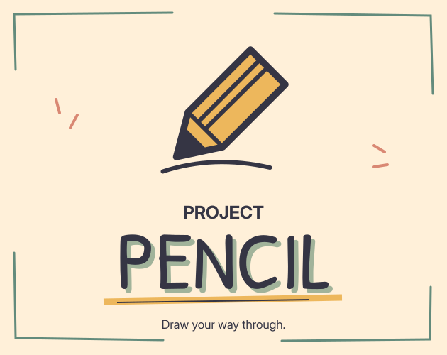
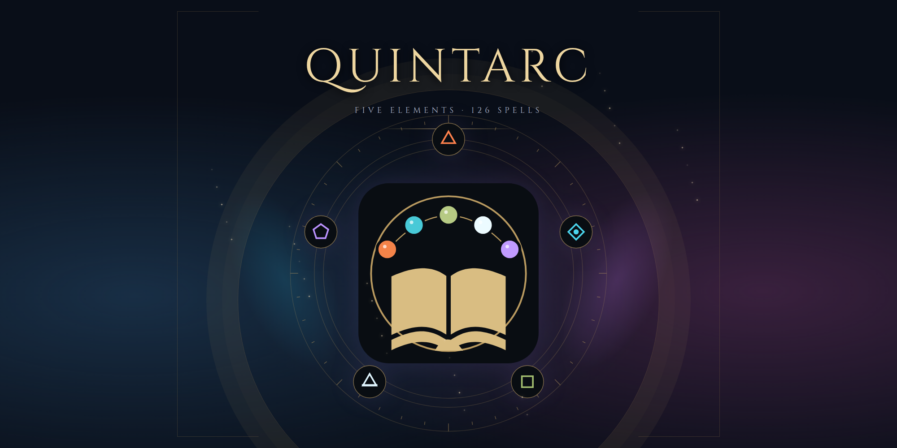

AN UNWRITTEN CHAPTER
The next “what if?”
There’s always another idea in the notebook. Let’s see where it takes us.

INDEPENDENT DEV · PHILIPPINES
An indie game developer from the Philippines, with experience in Web Design and UI/UX Design. Currently a Product Manager, always a gamer—and now bringing my own game ideas to life.
Explore my games Two games. Plenty more imagination.THE COLLECTION

A pencil. A little imagination. Turn your sketches into tools, weapons, and new ways forward.

Five elements. 126 spells. Combine your magic and discover your own way to command the arena.
AN UNWRITTEN CHAPTER
There’s always another idea in the notebook. Let’s see where it takes us.
BEHIND THE GAMES
I’m Anthony, the person behind Just Poly Games. I’ve worked as a Web Designer and UI/UX Designer, and I currently work as a Product Manager.
But games have always had a special place in my life. I love getting lost in their worlds, figuring out their systems, and thinking, “What if a game let me do this?”
For a long time, those ideas lived in my head. Now I’m turning them into games you can explore. Just Poly Games is where I share that journey—one idea, one experiment, and one playable world at a time.
Follow the journey on itch.io